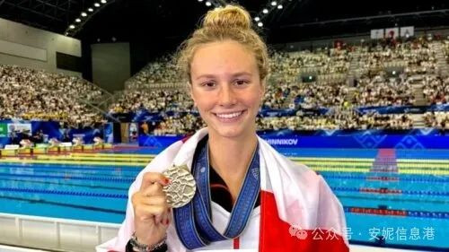
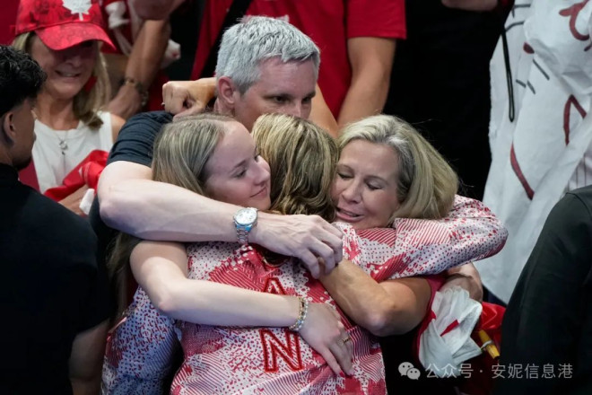
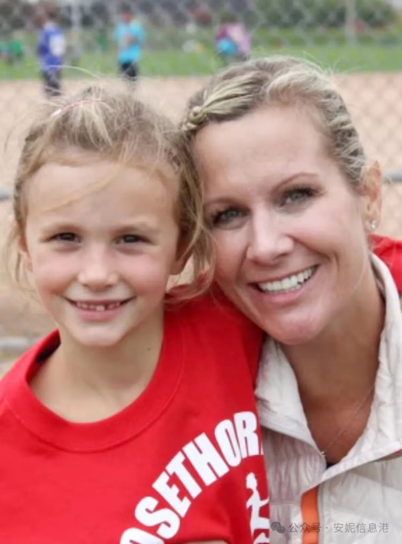

2024年8月3日，Summer McIntosh成为加拿大第一位在奥运会上获得三枚金牌的人。
这位来自多伦多的游泳运动员在巴黎奥运会上赢得了她的第三枚金牌，她在 200 米个人混合泳中以 2 分 6.56 秒的成绩打破了奥运会纪录。
她还赢得了 400 米混合泳和 200 米蝶泳冠军。
美国的Kate Douglass 获得第二名，澳大利亚的Kaylee McKeown获得第三名。
Summer McIntosh在本次巴黎游泳赛上获得的第四枚奖牌，此前她在 400 米自由泳比赛中获得银牌。
她追平了游泳队友Penny Oleksiak在夏季奥运会上获得四枚奖牌的记录。
Summer McIntosh的妈妈Jill Horstead也是加拿大游泳健将，40 年前代表加拿大参加洛杉矶奥运会。
1983 年，在委内瑞拉加拉加斯举行的泛美运动会上，年仅 16 岁的Jill Horstead以 2:17.13 的成绩在 200 米蝶泳比赛中获得第四名。Jill Horstead在 1985 年东京泛太平洋游泳锦标赛的 200 米蝶泳比赛中获得铜牌（成绩：2:13.46），并在 1986 年爱丁堡英联邦运动会的 200 米蝶泳比赛中获得另一枚铜牌（成绩：2:14.53）。
Jill Horstead在 1984 年洛杉矶夏季奥运会中，她晋级女子 200 米蝶泳 B 组决赛，成绩为 2:13.49，并在 B 组决赛安慰赛中获得第一名（总排名第九）。

Jill Horstead后来进入佛罗里达州Gainesville的佛罗里达大学学习，并于 1987 年至 1990 年代表Randy Reese教练的佛罗里达鳄鱼队参加全国大学体育协会 (NCAA) 和东南联盟 (SEC) 比赛。在她的大学游泳生涯中，她获得了 200 码蝶泳和 400 码混合泳接力赛的全美荣誉。她于 1990 年和 1991 年分别获得佛罗里达大学会计学学士和硕士学位。
Jill Horstead和丈夫Greg McIntosh有两个孩子，Brooke McIntosh（生于 2005 年 1 月 5 日）和Summer McIntosh（生于 2006 年 8 月 18 日），他们都是成功的运动员。Brooke是一名双人滑运动员，参加了 2020 年冬季青年奥运会，并在 2022 年世界青少年花样滑冰锦标赛中获得铜牌。Summer 追随母亲的脚步成为一名游泳运动员，参加了 2020 年和 2024 年夏季奥运会。
Summer 在今年的巴黎奥运会上在200米蝶泳项目夺冠，也算是为母亲圆梦，因为蝶泳是母亲最喜欢的游泳项目。
Jill笑着对加拿大主流媒体记者说：“我认为Summer 可以做到她在这里所取得的成就。但我不知道确切的统计数据（她是第一个获得三枚金牌的加拿大人）。现在，是的，我知道了，不过确实很酷！”
Jill补充说：“当然，我仍然能看到我的小女儿，或者我的青少年。我们是一个非常亲密的家庭…… 我们为她这个人感到特别自豪。”
在Summer获得最后一枚奖牌后，记者问Jill：“Summer还能走多远？”
Jill说：“没有极限。只要Summer喜欢，事实上，她非常喜欢……，没有极限。她会年复一年地去参赛，我们会看看她能取得什么成就。”

记者告诉Summer的母亲，她的女儿对媒体的印象有多么深刻。Summer冷静、镇定，总是设法回避更微妙的问题。正如他母亲所解释的那样，问题要尽量“戏剧化”。她从不显得自私或自命不凡。她不经常谈论别人，把一切注意力集中在自己身上。
事实上，Summer虽然年纪不大，但是，行事作风却相当成熟而老辣，时时掌握着主动权。如果她口无遮拦地说话，她可能会说比赛非常平淡，因为没有人接近……但是，她总有能力如此轻松地解开魔方。
所以，对于媒体人来说，当看到 17 岁的她在与数十名记者一起的新闻发布会上游刃有余，着实令人惊讶。
Jill很认同记者的描述，她说：“确实如此，呵呵！有时我听了都不敢相信。我不敢相信她刚刚说了这样那样的话。”
Jill承认，作为一名前奥运会游泳运动员，她必须克制自己，尽量不与Summer谈论游泳的事情。因为她绝对不能把自己置于教练和他女儿之间。
Jill解释说：“作为家长，即使你在游泳方面也很厉害，也不应该参与任何比赛策划。在每次大赛之前，我都不怎么跟她说话。我对她说‘祝你好运，亲爱的，我爱你，我为你感到骄傲’。”
Jill笑着说：“但是，这很难……有时,我想告诉他这个或那个。但我必须停下来……是的，孩他爸必须经常提醒我停下来。”
记者继续问：“您是否需要告诉她终于放松并花时间庆祝，还是她仍然只想重新开始训练？”

Jill说：“放松？不，我不必告诉他。她真的很擅长这个！”
Jill的女儿将于8月18日满18岁。
记者继续八卦：“她的礼物会是什么？假设给她买一张商店礼品卡可能不再有像以前一样的效果，对吧？”
这位母亲笑着表示同意，并指出家人正计划与朋友在加拿大举办一个大型聚会。Jill还强调，得益于她十几年的朋友圈，周围的人都知道尊重孩子的独立人格，既不吹捧，也不说要戒骄戒躁之类所谓长辈教导，唯有如此，孩子们才能够保持一颗平常之心，享受运动本身带来的愉悦，增强自信心。